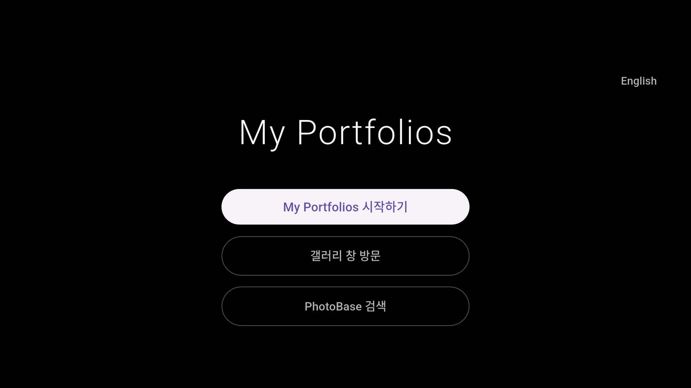
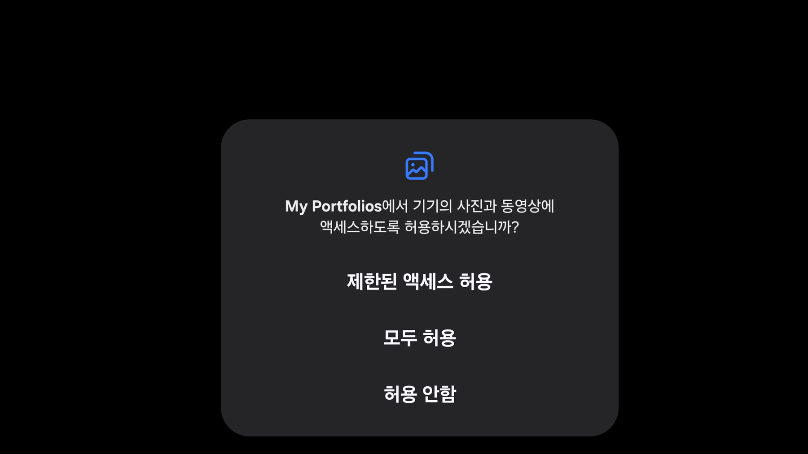
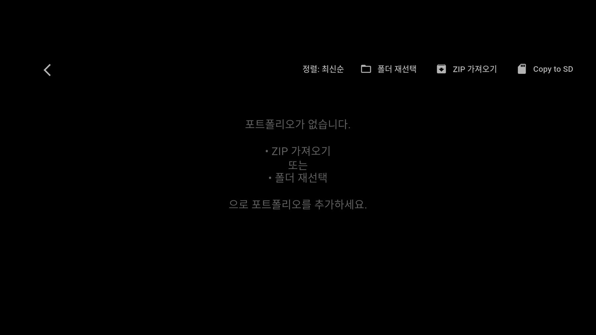
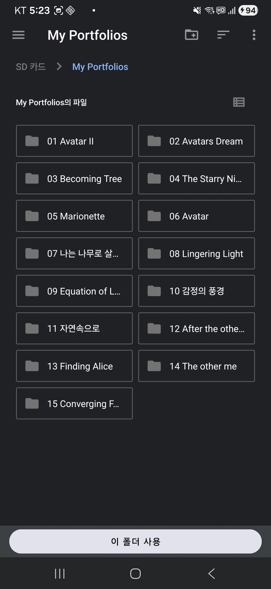
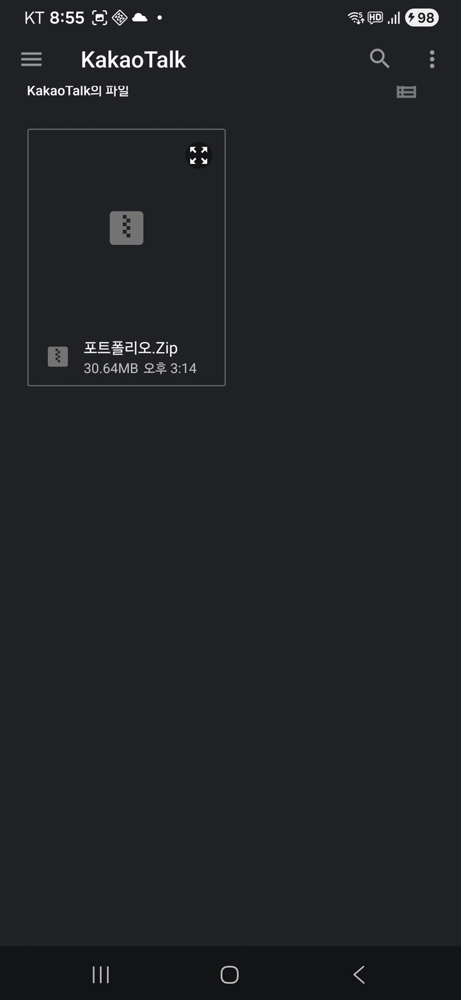
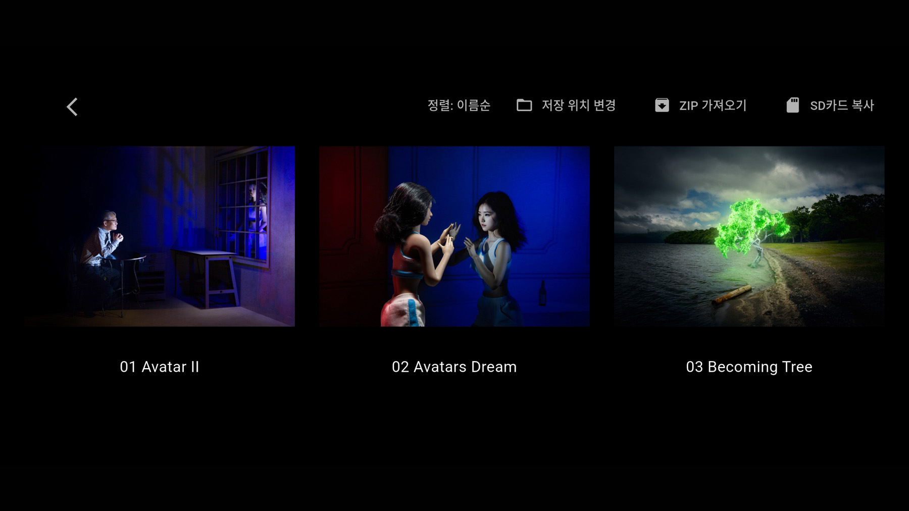
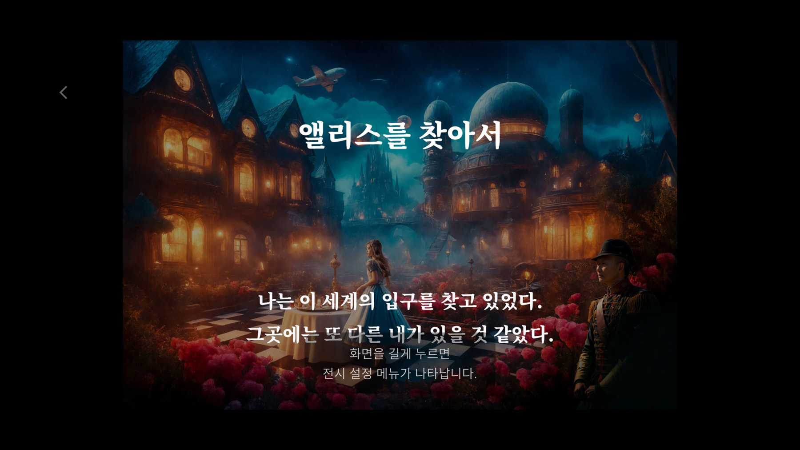
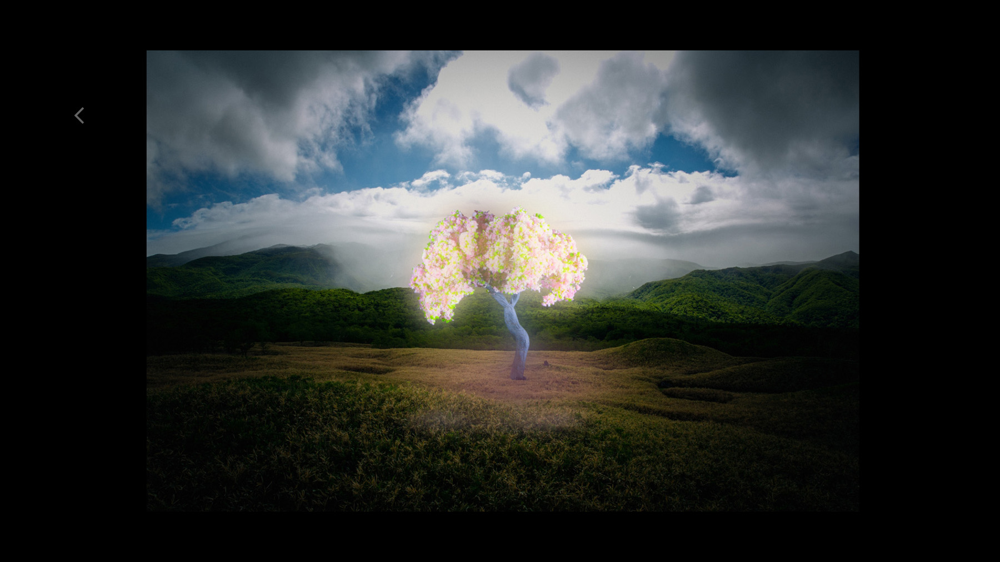
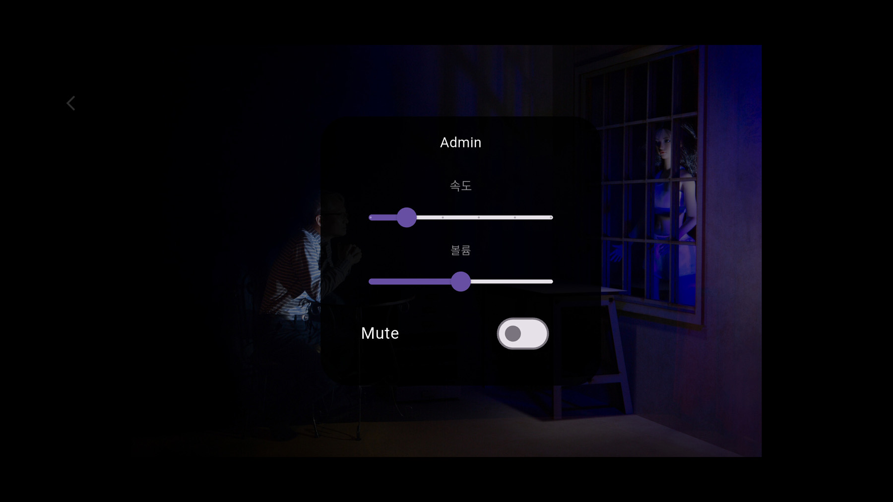

My Portfolios 사용설명서
2026.05.18
지금 My Portfolios는 Google Play Store에서 정식으로 등록되기 전 필요한 내부 테스트 단계에 있습니다. 현재 내부 테스트를 진행하면서 기능을 계속 개선하고 있습니다.
1. 앱 소개
My Portfolios는 작품 감상을 위한 디지털 포트폴리오 및 모바일 전시 플랫폼입니다. 이미지와 오디오를 하나의 전시 형태로 구성하여 모바일 환경에서 감상할 수 있습니다. ZIP 파일 기반의 포트폴리오 가져오기 기능을 지원하며, 태블릿과 휴대폰에서 오프라인 전시 환경을 구성할 수 있습니다. My Portfolios를 확장하여 만들어 낸 것이 바로 온라인 갤러리인 ‘갤러리 창’입니다.
주요 기능:
- ZIP 포트폴리오 가져오기
- 포트폴리오 폴더 관리
- 전체화면 전시 모드
- 이미지 슬라이드 감상
- 배경 오디오 지원
- 한국어 / 영어 UI 지원
- SD카드 백업 지원
- 태블릿 최적화 UI
2. 설치 방법
My Portfolios가 Google Play Store에 정식 등록이 되면 Google Play Store에서 “My Portfolios”를 검색한 후 설치할 수 있습니다. 설치 후 앱을 실행하면 포트폴리오 폴더를 선택하여 바로 사용할 수 있습니다.
* 현재는 Google Play Store에 정식으로 등록되기 전 내부테스트 단계에 있기 때문에 휴대폰의 구글 G메일주소를 Google Play Store에 미리 등록한 사용자만 링크를 통해 설치 할 수 있습니다.
3. 기본 사용 흐름
앱의 기본 구조는 다음과 같습니다.
4. 앱의 시작 화면
앱의 시작화면에서 3가지 버튼이 보입니다.
‘My Portfolios 시작하기’ 버튼을 누르면 My Portfolios가 시작됩니다. ‘갤러리 창 방문’ 버튼을 누르면 온라인 갤러리인 ‘갤러리 창’으로 연결이 됩니다. ‘PhotoBase 검색’ 버튼을 누르면 국내에서 진행되었거나 진행 중인 사진전 전시 정보를 검색할 수 있습니다.
- My Portfolios 시작하기
- 갤러리 창 방문
- PhotoBase 검색

5. My Portfolios 폴더 만들기
앱을 사용하려면 먼저 휴대폰 내장공간 또는 SD카드 안에 다음과 같이 포트폴리오 파일을 보관하는 폴더를 생성해야 합니다.
그리고 휴대폰에 포트폴리오 파일을 보관하는 방법은 2가지가 있습니다.
[1] 첫 번째 방법은 휴대폰을 컴퓨터와 USB 케이블을 통해 연결하여 컴퓨터에서 만들어 놓은 포트폴리오 폴더를 휴대폰으로 복사하는 방법입니다. 이 방법을 사용하는 경우에는 폴더 이름을 사용자가 원하는 이름으로 사용할 수 있습니다.
[2] 두 번째 방법은 컴퓨터에서 만들어 놓은 포트폴리오 폴더 전체를 zip파일로 압축하여 자신의 메일계정이나 구글드라이브, 카카오톡 등의 방법으로 휴대폰에 설치하는 방법입니다. 이 경우에는 폴더 이름을 반드시 /My Portfolios 로 만들어야 합니다.
상기 2가지 방법 모두 다음과 같은 폴더 구조로 만들어야 합니다.
각 폴더 하나가 하나의 포트폴리오가 됩니다.
6. 포트폴리오 폴더 구성 방법
각 포트폴리오 폴더 안에는 이미지 파일 과 음악파일(선택) 들을 넣으면 됩니다. 작품 이미지는 파일 이름 순서대로 표시됩니다.
권장 형식:
숫자를 3자리 형식으로 사용하는 것을 추천합니다.
음악파일은 music.mp3 의 형태로 사용해야 하며, 음악파일이 없어도 소리만 나오지 않을 뿐이지 앱은 정상적으로 작동합니다.
앱은 자동으로:
- 이미지를 읽고
- 음악파일을 실행하고
- 대표 이미지를 선택하며
- 포트폴리오를 생성합니다.
7. 지원 이미지 형식
- JPG
- JPEG
- PNG
- WEBP
고해상도 이미지도 지원됩니다.
8. 대표 이미지(썸네일)
포트폴리오 선택 화면에서는 대표 이미지(썸네일)가 표시됩니다. 폴더 안에 poster.jpg 파일이 있으면 해당 이미지가 대표 이미지로 사용됩니다. poster.jpg 파일이 없으면 001.jpg가 대표 이미지로 자동 사용됩니다.
첫 화면용 이미지를 따로 구성하고 싶다면:
형태를 추천합니다.
9. My Portfolios 시작하기
앱의 시작화면에서 ‘My Portfolios 시작하기’를 누르면 기기의 음악과 오디오 그리고 사진과 동영상에 액세스하도록 허용해 달라는 창이 뜹니다. 이 두 가지를 모두 허용을 선택해 주면 포트폴리오 선택 화면이 나타납니다.

10. 폴더선택
앱을 최초 사용시 사용할 포트폴리오 선택 화면에서 폴더를 선택해야 합니다. 앞서 만들어 놓은 폴더가 있으면 우측 상단의 ‘폴더 재선택’ 버튼을 누르고 해당 폴더(예:My Portfolios)를 찾아서 선택하면 됩니다.
포트폴리오 폴더는 휴대폰의 내장 저장공간 과 SD카드에서 모두 사용이 가능합니다.
사용할 폴더를 선택하고, 하단의 ‘이 폴더 사용’ 버튼을 누르면 ‘포트폴리오 폴더의 이미지와 음악 파일을 읽기 위한 권한’ 요청들이 나오는데 허용을 선택해주면 포트폴리오 화면이 나옵니다.
이 과정은 처음 사용시 한 번만 해주면 됩니다. 만약 사용도중 사용하는 폴더를 변경하게 되면 이 허용 선택 작업을 다시 해줘야 합니다. 이 앱은 사용자가 선택한 포트폴리오 폴더의 이미지와 음악 파일을 읽기 위해 저장소 접근 권한이 필요하기 때문입니다.


11. ZIP 포트폴리오 가져오기
My Portfolios 에서는 컴퓨터에서 만들어 놓은 포트폴리오 폴더 전체를 ZIP파일로 압축하여 자신의 메일계정이나 구글드라이브, 카카오톡 등을 이용하여 휴대폰에 설치하는 방법이 있습니다. 이 경우에는 폴더 이름을 반드시 /My Portfolios 로 만들어야 합니다.
포트폴리오 선택화면 우측 상단에 있는 ‘ZIP 가져오기’ 버튼을 누르면 휴대폰의 내부 폴더들이 나타납니다. 이메일에서 ZIP 파일을 다운을 받으면 보통 /Download 폴더에 저장되고, 카카오톡에서 다운을 받으면 보통 /Download/KakaoTalk 폴더에 저장이 됩니다.
해당 폴더를 찾아 다운로드한 ZIP파일을 누르면 화면은 포트폴리오 선택화면으로 돌아오고 왼쪽 하단에 ‘ZIP 가져 오기 완료’라는 메시지가 나옵니다.
그러면 ZIP파일의 압축이 해지되면서 /Documents/My Portfolios 라는 폴더가 만들어지고 이 포트폴리오 폴더가 자동으로 선택되어 그 안에 포함되어 있던 포트폴리오들이 화면이 나타납니다.


12. Copy to SD
Copy to SD는 휴대폰에 SD카드가 삽입되어 있고, 포트폴리오 데이터를 SD카드에서 관리를 하고자 할 경우에 필요한 기능입니다.
‘ZIP 가져오기’를 한 후 그 포트폴리오를 SD카드로 복사를 하고자 할 때 사용합니다. ‘Copy to SD’버튼을 누르고 SD카드에서 /Documents 폴더를 선택한 이후 하단에 보이는 ‘이 폴더 사용’ 버튼을 누르면 내장 저장공간/Documents/My Portfolios 의 데이터가 SD카드/Documents/My Portfolios 로 복사가 이루어집니다.
현재는 복사가 이루어진 후 내장 저장공간/Documents/My Portfolios 의 데이터는 그대로 존재하기 때문에 삭제를 원하면 직접 삭제를 해야 합니다. 아직은 안전한 데이터 관리를 위해 원본 데이터를 자동 삭제하지 않습니다. 향후 업데이트 버전에서는 기존 데이터의 자동 삭제가 포함될 수도 있습니다.
13. 포트폴리오 순서 정하기
포트폴리오 순서를 원하는 대로 정하고 싶다면 폴더 이름 앞에 번호를 붙이는 방식을 추천합니다.
이 방식은:
- 가장 직관적이며
- 관리가 쉽고
- 앱 정렬 기능과 잘 연동됩니다.
※ 숫자는 2자리 형식 사용을 추천합니다.
14. 정렬 기능
앱 우측 상단에는 정렬 버튼이 있습니다.
지원 정렬:
- 최신순 정렬
- 이름순 정렬
최신순: 최근 수정된 포트폴리오가 먼저 표시됩니다.
이름순: 폴더 이름 기준으로 정렬됩니다.
15. 작품 감상 방법
포트폴리오 대표 이미지를 터치하면 전체 화면 감상 모드로 진입합니다. 전시 화면에서는 배경음악과 함께 자동 슬라이드가 진행됩니다.
10초 마다 슬라이드가 바뀌면서 작품들을 보여주는데 손가락으로 눌러 좌우로 움직이면 슬라이드를 앞뒤로 움직일 수 있습니다.
화면을 손가락으로 길게 누르면 컨트롤 박스(Admin)가 나타납니다.
컨트롤 박스에서는:
- 배경음악 볼륨 조절
- 자동 슬라이드 속도 조절
- 음소거(Mute)
등을 설정할 수 있습니다. 화면 왼쪽 상단의 뒤로 가기 버튼을 누르면 이전 화면으로 돌아갑니다.



16. 추천 폴더 구조 예시
17. 추천 사용 방법
- 개인 작품 포트폴리오
- 전시 아카이브
- 사진 작품집
- AI 아트 컬렉션
- 디자인 포트폴리오
- 시각예술 기록
- 전시장 모니터 전시
- 작가 소개 자료
특히 TV나 대형 모니터와 연결하면 디지털 전시 공간처럼 활용할 수 있습니다. 태블릿과 TV 또는 대형 모니터를 ‘USB-C to HDMI 케이블’로 연결하면 TV 또는 대형 모니터로 전시를 구현할 수 있습니다.
18. 앱 업데이트
Play Store 버전에서는:
- 기능 개선
- 버그 수정
- UI 업데이트
등이 있을 경우 자동 업데이트 알림이 제공됩니다.
19. 개인정보 및 데이터
이 앱은:
- 회원가입 없음
- 서버 저장 없음
- 클라우드 전송 없음
구조로 설계되었습니다. 모든 데이터는 사용자의 기기 내부에만 저장됩니다.
20. 문제 해결
이미지가 보이지 않는 경우
- 지원 이미지 형식인지 확인
- 이미지 파일 손상 여부 확인
- 폴더 안에 이미지가 있는지 확인
포트폴리오가 표시되지 않는 경우
- My Portfolios 폴더 선택 여부 확인
- 폴더 구조 확인
- 권한 허용 여부 확인
앱이 느린 경우
고해상도 이미지가 매우 많으면 로딩 시간이 길어질 수 있습니다. 적절한 해상도 사용을 권장합니다.
휴대폰은 긴 변 기준 1200px, 태블릿은 긴 변 기준 1600px, 컴퓨터 화면은 긴 변 기준 2200px 정도만 되어도 충분합니다. (포토샵 저장레벨 9~10 추천)
21. 마무리
My Portfolios는 복잡한 관리 기능보다 “작품 감상”과 “전시 경험”에 집중한 포트폴리오 앱입니다.
누구나 자신의 작업을 하나의 작은 디지털 전시 공간처럼 구성할 수 있도록 설계되었습니다.
감사합니다.